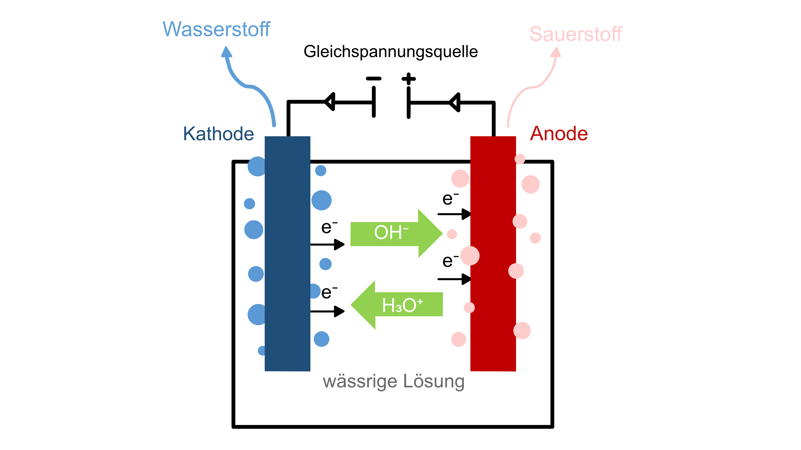

In der Region Xinjiang im Nordwesten Chinas baut der Konzern Sinopec momentan eine der innovativsten und größten Produktionsanlagen für grünen Wasserstoff der Welt.
Die geplante Fertigstellung und Inbetriebnahme ist 2023 und das Projekt soll bis dahin ca. 470 Mio. US-Dollar kosten.
Die Anlage besteht aus fünf Abschnitten:17
Das Besondere an dieser Anlage ist die Produktion von grünem Wasserstoff.
Die Eigenschaft von Wasserstoff, bei der Verbrennung nur Wasserdampf freizusetzen, macht ihn zu einem klimaneutralen Energieträger. Diese Annahme gilt allerdings nur, wenn von grünem Wasserstoff die Rede ist. Für die Herstellung durch Elektrolyse wird viel Strom benötigt - stammt dieser aus einem fossilen Energieträger wie Kohle beeinträchtigt dies auch die CO2-Bilanz des Wasserstoffs.18
Da die Anlage von Sinopec für die Elektrolyse aber ausschließlich Strom aus einem Solarkraftwerk nutzt17, ist die CO2-Bilanz des produzierten Wasserstoffs gleich null.
Bei der Elektrolyse wird in einem Elektrolyseur eine chemische Verbindung unter Verwendung von elektrischem Strom aufgespalten. Bei der Wasserelektrolyse wird elektrische Energie in chemische Energie umgewandelt. Es entstehen je zwei Wasserstoffmoleküle und ein Sauerstoffmolekül aus zwei Wassermolekülen. 19
Ablauf der Elektrolyse
Quelle: mith2indiezukunft1.
In der Region Xinjiang im Nordwesten Chinas baut der Konzern Sinopec momentan eine der innovativsten und größten Produktionsanlagen für grünen Wasserstoff der Welt.
Die geplante Fertigstellung und Inbetriebnahme ist 2023 und das Projekt soll bis dahin ca. 470 Mio. US-Dollar kosten.
Die Anlage besteht aus fünf Abschnitten:17
Quelle: energiezukunft1
Quelle: mith2indiezukunft1
Das Besondere an dieser Anlage ist die Produktion von grünem Wasserstoff.
Die Eigenschaft von Wasserstoff, bei der Verbrennung nur Wasserdampf freizusetzen, macht ihn zu einem klimaneutralen Energieträger. Diese Annahme gilt allerdings nur, wenn von grünem Wasserstoff die Rede ist. Für die Herstellung durch Elektrolyse wird viel Strom benötigt - stammt dieser aus einem fossilen Energieträger wie Kohle beeinträchtigt dies auch die CO2-Bilanz des Wasserstoffs.18
Da die Anlage von Sinopec für die Elektrolyse aber ausschließlich Strom aus einem Solarkraftwerk nutzt17, ist die CO2-Bilanz des produzierten Wasserstoffs gleich null.
Bei der Elektrolyse wird in einem Elektrolyseur eine chemische Verbindung unter Verwendung von elektrischem Strom aufgespalten. Bei der Wasserelektrolyse wird elektrische Energie in chemische Energie umgewandelt. Es entstehen je zwei Wasserstoffmoleküle und ein Sauerstoffmolekül aus zwei Wassermolekülen.19